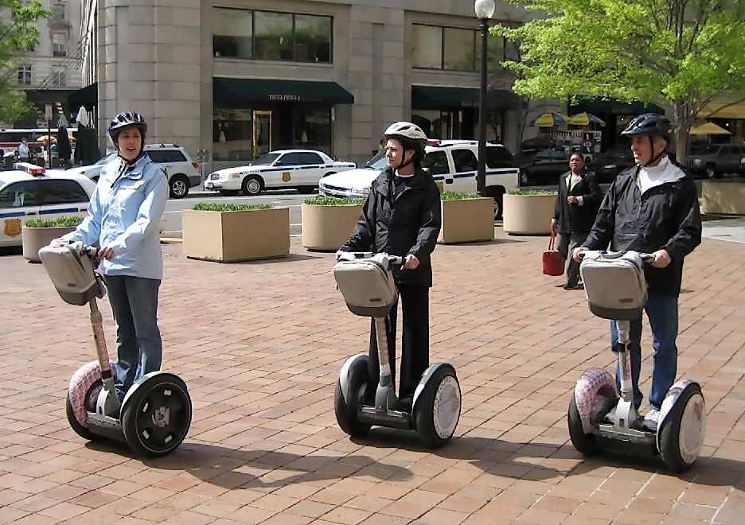
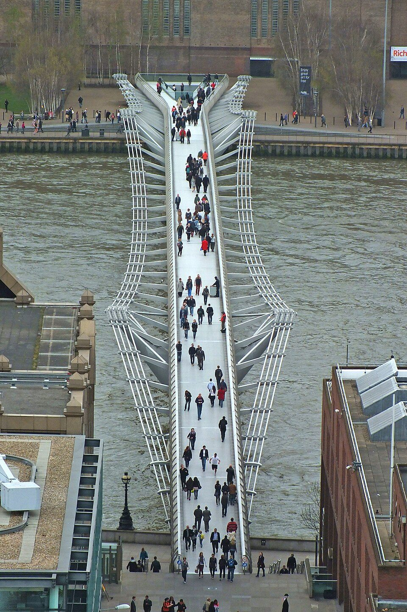
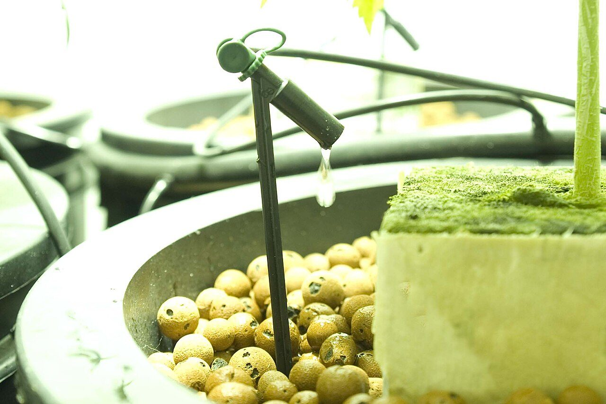
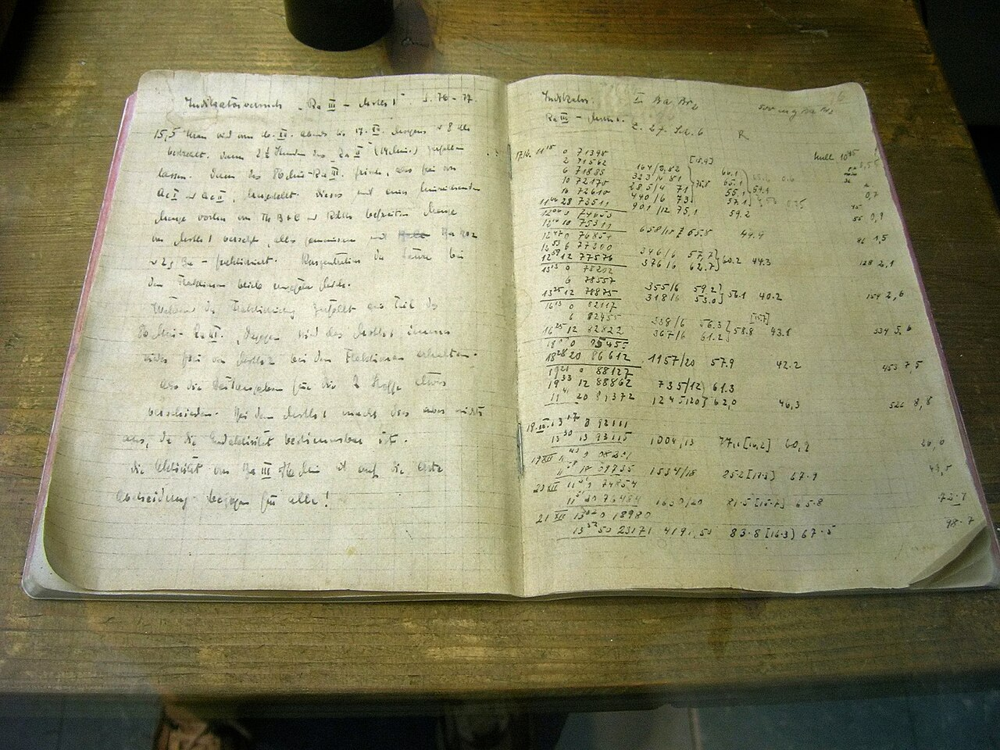
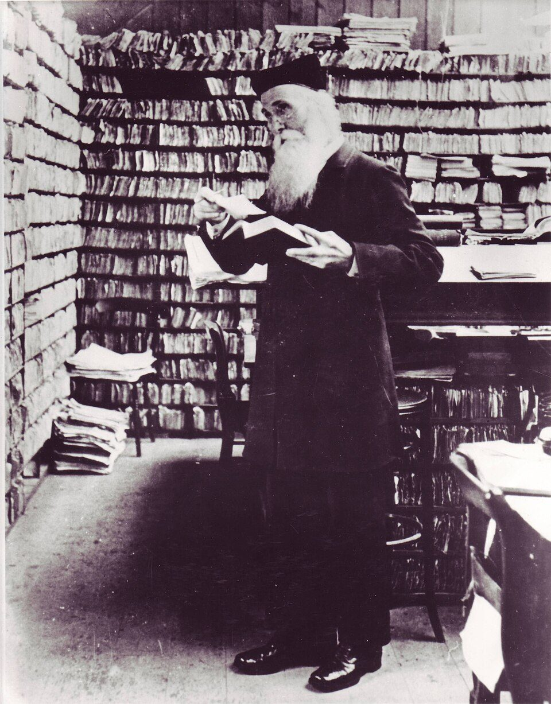
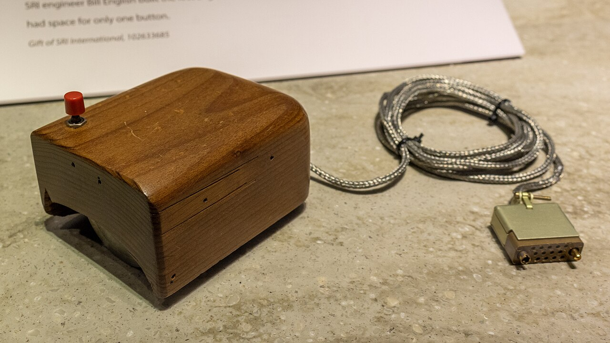
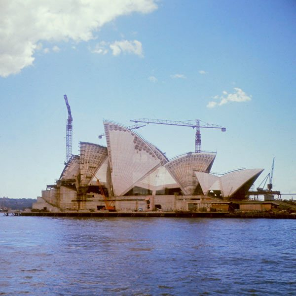

Escribe qué quieres construir. Acabas de escribir una solución
Todo el curso gira alrededor de una cosa que vais a construir. Hoy se decide qué, y la trampa está en el primer renglón: casi todo el mundo empieza por el aparato y no por la gente.
Este curso no se parece al de segundo. Allí cada tema iba por su lado: unas semanas estructuras, otras electricidad, otras programación. Aquí hay una sola cosa —un aparato de verdad, con un sensor que se entera de algo y un actuador que hace algo— y las nueve unidades del curso son las fases de construirlo: detectarlo, diseñarlo, fabricarlo, automatizarlo, contarlo y medir lo que le cuesta al planeta.
De modo que lo de hoy no es un calentamiento. Hoy se decide qué vais a construir, y con eso se decide el curso entero.
De qué va este curso, y de qué va esta unidad
Todo el curso gira alrededor de una cosa que vais a construir. Hoy se decide qué.Voz sintetizada sobre guión propio. La boca sigue el volumen real de la voz.
Lo que sale, siempre, es esto: un robot, un dron, un coche teledirigido, una consola, un brazo robótico. Y son respuestas estupendas para la pregunta que os he hecho. El problema es que la pregunta estaba mal hecha, y la he hecho mal a propósito.
Coged cualquiera de esas frases —la vuestra, mejor— e intentad contestar a estas tres preguntas por escrito. Sin inventar.
- ¿A quién le hace falta eso? Con nombre: no «a la gente».
- ¿Qué le pasa ahora a esa persona por no tenerlo?
- ¿Cómo sabríais al final de curso si le ha servido de algo?
No se pueden contestar. Y no es porque seáis vagos: es porque la frase no contiene esa información. «Quiero hacer un robot» no dice nada de nadie.
Aquí tienes dos frases. Parecen lo mismo y no lo son:
A — Quiero hacer un robot que riegue las plantas del
centro.
B — Las plantas del hall se secan en Semana Santa y en junio hay que tirar
varias.
¿Cuál de las dos deja más trabajo por hacer? Esa es la buena, y la razón de que lo sea es lo que vamos a ver hoy.
La A ya trae dentro la respuesta: un robot. Si el problema de las plantas se arreglara mejor con un gotero de dos euros, la frase A no te deja ni verlo. La B no nombra ninguna pieza, y por eso deja abiertas todas las soluciones. Eso es un problema.
Una solución magnífica buscando un problema
Esto no le pasa solo a los alumnos de cuarto. Le ha pasado a gente con mucho dinero y muy buenos ingenieros.

El Segway funcionaba. Técnicamente era una maravilla: se mantenía de pie solo, con giroscopios, y se manejaba inclinándose. No falló la ingeniería. Falló algo de antes: nadie tenía el problema que resolvía. Para ir a la esquina ya estaban las piernas; para ir a la otra punta, el metro; y para ir a otra ciudad, el coche. El hueco que llenaba se lo habían imaginado.
Problema y solución: no son lo mismo
Problema: algo que le pasa a alguien, que se puede observar y medir, y que se escribe sin nombrar ninguna pieza.
Solución: una manera concreta de arreglarlo. Siempre hay varias, y la primera que se te ocurre casi nunca es la mejor.
La prueba de las piezas: tacha de tu frase todas las palabras que nombren un aparato, un material o una tecnología (robot, sensor, Arduino, app, bomba). Si después de tacharlas queda una frase que se entiende, tenías un problema. Si te quedas sin frase, tenías una solución.
Cuidado con la moraleja fácil. Esto no significa que las ideas estén mal, ni que haya que prohibirse pensar en soluciones. Significa que la solución va después. Si se te ha ocurrido un robot, apúntalo en una esquina del cuaderno y déjalo ahí: en la sesión 3 lo vas a necesitar, y entonces tendrá contra qué compararse.
Cómo se detecta un problema de verdad
Tres pasos, y en este orden. Cambiar el orden es el error más común.
Observar, preguntar, comprobar
- Observar, sin preguntar nada. Mirar un sitio concreto durante un rato concreto y apuntar lo que pasa, no lo que opinas. «Jueves, 5.ª hora, aula 12: nadie abre la ventana en todo el cambio de clase.»
- Preguntar a quien le pasa, no a tus amigos. Y preguntar por lo que ha hecho, no por lo que opina: «¿cuántas veces regaste la planta la semana pasada?» vale; «¿te parece importante regar?» no vale, porque todo el mundo contesta que sí.
- Comprobar que le pasa a más gente que a ti, contando. Un problema que le pasa a una persona es una manía; uno que le pasa a cuarenta es un problema.
Y ahora, la parte que casi nadie hace: ponerle un número. Un problema sin número no se puede comparar con otro, y al final del curso no se puede demostrar que lo hayas arreglado. La escena de abajo hace esa cuenta.
Las cuatro preguntas que mide un problema
Un problema de verdad puede contestar a las cuatro. Una idea, no.
- ¿A cuántos les pasa? (personas, aulas, macetas…)
- ¿Cuántas veces por semana pasa?
- ¿Qué cuesta cada vez? En minutos, litros, euros o kilovatios hora: en algo que se pueda medir.
- ¿Durante cuánto tiempo? Un curso son 35 semanas.
tamaño del problema = afectados × veces por semana × coste de cada vez × semanas
Conversiones que usa la escena (para poder comparar cosas distintas): 1 h = 60 min; 1 sesión de clase = 60 min; 1 jornada escolar = 6 h; 1 día = 24 h; un LED de 9 W gasta 0,009 kWh por hora encendido; 1 garrafa = 5 L; 1 bañera = 150 L.
Haz esta prueba en la escena; es la que más cambia las cosas. Carga Luz encendida: viene con una sola persona afectada, porque es un problema que empieza siendo tuyo. Sale un total que parece grande en horas y que, pasado a electricidad, son unos 2,6 kWh en todo el curso: menos de un euro de luz. Ahora carga Aula cargada, que le pasa a 24 personas 30 veces por semana: salen 126.000 minutos, que son 2.100 horas frente a las 294 de la lámpara. Siete veces más, y eso no es una opinión: es la misma cuenta con los mismos minutos.
Eso no quiere decir que la lámpara sea mal proyecto. Quiere decir que, si la elegís, tenéis que ir a buscar a cuánta gente más le pasa antes de decir que es un problema del centro. Con preguntar en clase basta para cambiar el 1 por un 19, y la cuenta entera con él.
Cómo se observa sin preguntar y sin dirigir la respuesta, con ejemplos. Es la parte que más se salta todo el mundo. El vídeo no se carga hasta que lo pulsas, y se reproduce sin cookies de seguimiento. Si no se ve aquí —porque la red del centro bloquee YouTube o porque ese vídeo no se deje empotrar—, ábrelo directamente aquí. El vídeo es de su autor y no forma parte del material publicado bajo la licencia de esta página.
Primera parte · observar y preguntar (10 min)
Salís del aula con el cuaderno. No vale preguntaros entre vosotros.
- Apuntad tres cosas observadas en el centro, cada una con sitio, día y hora. Escritas como lo que pasa, no como lo que hay que hacer.
- Preguntad a tres personas distintas que no sean de vuestro grupo, y anotad lo que han hecho, no lo que opinan. Una de las tres tiene que ser alguien que no sea alumno: conserje, limpieza, secretaría, un profesor.
Segunda parte · medir (10 min)
De las tres observaciones, elegid dos y rellenad para cada una la tabla de las cuatro preguntas. Los números son vuestros: contándolos, no inventándolos. Si no sabéis uno, escribid cómo lo averiguaríais.
Luego, con la escena, calculad el tamaño de las dos y comparadlas. Y contestad: ¿cambiaría el orden si solo os contarais a vosotros?
Cómo se evalúa
- Las tres observaciones, con sitio, día y hora (2 puntos).
- Las tres personas preguntadas, y una de ellas no es alumno (1 punto).
- Ninguna de las tres frases nombra una pieza: pasan la prueba de las piezas (2 puntos).
- Las dos tablas completas, con unidades (3 puntos).
- Los dos tamaños calculados y comparados, con una frase que diga cuál es mayor y cuántas veces (2 puntos).
- ¿Por qué «quiero hacer un robot» no es un problema?
Ver respuesta
Porque no dice a quién le pasa nada, ni qué le pasa, ni cómo se sabría si ha servido. Además trae la solución dentro, y eso cierra todas las demás antes de haberlas mirado.
- ¿En qué consiste la prueba de las piezas?
Ver respuesta
En tachar de la frase todas las palabras que nombren un aparato, un material o una tecnología. Si lo que queda se sigue entendiendo, era un problema; si te quedas sin frase, era una solución disfrazada.
- El Segway funcionaba perfectamente. ¿Por qué se considera un fracaso?
Ver respuesta
Porque resolvía un problema que casi nadie tenía. Se vendieron 140.000 en toda su vida comercial, después de que se dijera que sería «más importante que internet». El fallo no estaba en la ingeniería: estaba antes, en la fase de hoy.
- Dos problemas: uno le cuesta 5 minutos a una persona todos los días, y otro 1 minuto a treinta personas todos los días. ¿Cuál es mayor?
Ver respuesta
El segundo, y por bastante: 5 × 1 = 5 minutos al día frente a 1 × 30 = 30 minutos al día. Seis veces más. Por eso hay que contar a cuántos les pasa antes de decidir, y no fiarse de lo molesto que te parezca a ti.
El encargo del curso: elegís entre tres
Los problemas que acabáis de encontrar por el centro son vuestros y no se tiran: de ahí salen los requisitos, las medidas y casi todo lo que habrá que justificar. Pero lo que se construye este curso es uno de estos tres, y cada grupo elige el suyo:
- A · Riego automático. Sensor de humedad de suelo y bomba de 3-6 V o servo. Lo que mide de impacto: agua gastada frente a regar a mano.
- B · Aviso de aula mal ventilada. Sensor de temperatura y humedad (DHT11) y una señal luminosa de tres colores. Impacto: ventilar frente a calentar, que es un debate de verdad y no tiene respuesta obvia.
- C · Lámpara de estudio que se ajusta sola. LDR y LED de potencia o tira. Impacto: el consumo real, con la etiqueta energética delante.
Los tres llevan un sensor, una decisión y un actuador, que es lo que pide el curso; los tres miden algo distinto, así que en la puesta en común la clase ve tres casos y no tres veces el mismo; y los tres se montan por menos de 5 € por grupo, salvo la bomba del A.
Lectura del tema
Una sesión entera para leer y contestar, y conviene hacerla pronto: cuenta tres proyectos de verdad que se perdieron en estas cuatro sesiones, antes de tocar un tornillo. 30 párrafos numerados: cada uno lee el suyo en voz alta, en orden. Después, diez preguntas por escrito.
↓ Tres proyectos que ya estaban perdidos antes de empezar · PDF
Dos grupos cumplen el mismo encargo y entregan dos cosas distintas
Si el encargo se puede cumplir de dos maneras, el que está mal es el encargo. Un requisito es una frase que se puede ejecutar contra unos datos.
Tenéis un problema detectado y medido. Lo siguiente que hace todo el mundo es abrir el cajón de los componentes. Vamos a hacer una prueba antes.
Lo normal es que salga una frase parecida a esta: «que riegue la planta cuando lo necesite». Y lo normal es que el grupo de al lado entregue algo que vosotros no habíais imaginado: un depósito con un grifo, alguien que pasa los martes, una botella boca abajo. Y, molesto pero cierto: lo han cumplido.
Nadie ha hecho trampa. Si dos personas cumplen el mismo encargo y entregan dos cosas distintas, el que está mal no es ninguno de los dos: es el encargo. ¿Qué le falta exactamente a la frase «que riegue cuando lo necesite» para que solo se pueda cumplir de una manera comprobable?
Le falta que se pueda comprobar. Y comprobar no es mirarlo y decir que tiene buena pinta: es coger unos datos y ejecutar la frase encima de ellos, como si fuera una cuenta. Si la frase no se puede ejecutar, en junio no podréis demostrar que el proyecto ha salido bien, y la nota será una discusión.
El renglón que nadie escribió

El puente estaba bien calculado para lo que se le había pedido. Se había comprobado que aguantara el peso de la gente, que es una fuerza hacia abajo. Lo que no había en ningún renglón era la fuerza horizontal que hace una multitud al andar.
Y ahí ocurrió algo que nadie había previsto: al notar el balanceo, la gente ajusta el paso para no caerse, y al ajustarlo lo hace a la vez que los demás. Más gente al mismo paso, más balanceo; más balanceo, más gente al mismo paso. El fenómeno se llama excitación lateral sincronizada, y hoy está en las normas. Entonces no estaba, porque nadie lo había escrito como requisito.
Fíjate en lo incómodo del caso: no hubo ningún error de cálculo. Todo lo que se calculó estaba bien. Lo que falló fue la lista de lo que había que calcular, y esa lista se escribe en la fase de hoy, cuando todavía no hay nada construido y parece que no se está haciendo nada.
Qué lleva dentro un requisito
Las cuatro piezas
Un requisito es una frase que se puede convertir en una comparación. Lleva cuatro cosas, y si le falta una no se puede comprobar:
- La magnitud: qué se mide. La humedad del suelo.
- El comparador y el valor: cómo de grande tiene que ser. No baja de 40.
- La unidad. Por ciento. Sin unidad, el número no significa nada.
- Cómo se comprueba: con qué ensayo y durante cuánto. En un ensayo de 14 días, midiendo cada 6 horas.
Deseo: «que riegue bien».
Requisito: «la humedad del suelo no baja del 40 % en un ensayo de 14
días midiendo cada 6 horas».
La diferencia entre los dos no es que uno suene más técnico. Es que el segundo se puede correr contra unos datos y da un sí o un no. Aquí están los datos de un prototipo de riego funcionando 14 días. Escribe tus requisitos y pulsa Comprobar.
Los tres requisitos que habéis escrito
Y los tres que escribisteis primero, tal cual
Los requisitos tiran unos de otros
Baja el umbral del prototipo en la escena: gasta menos agua y la humedad mínima se hunde. Súbelo: la humedad aguanta y el gasto sube. No se puede mejorar uno sin empeorar el otro: eso es un compromiso, y aparece en todos los proyectos.
Lo que hay que hacer no es buscar el umbral mágico, es decidir cuál manda y dejarlo escrito: «si hay que elegir, preferimos gastar un poco más de agua antes que dejar que la planta se seque». Esa frase vale oro en junio, cuando haya que justificar por qué el aparato hace lo que hace.
Y a veces el requisito es imposible, y hay que enterarse ahora
Mira el tercero: «8 riegos o menos en 14 días». Con la pérdida en 4 puntos, prueba todos los umbrales que quieras: no se cumple nunca. Y la razón se puede calcular sin tocar la escena: en 14 días hay 56 lecturas y la tierra pierde 56 × 4 = 224 puntos de humedad, mientras que cada riego devuelve 22. Hacen falta 224 ÷ 22 = 10,2 riegos sí o sí. El umbral decide cuándo se riega, no cuántas veces: eso lo decide lo que echa la bomba de una vez.
Cuando un requisito sale imposible hay dos salidas, y las dos valen: cambiar el diseño (una bomba que eche más en cada riego) o cambiar el requisito. Lo que no vale es dejarlo escrito y hacer como que no lo has visto. Enterarse de esto en septiembre cuesta un renglón; enterarse en mayo cuesta el trimestre.
Dos cosas que conviene saber y que la escena deja ver a medias:
- No todos los requisitos se miden con el mismo ensayo. «Que sea fácil de usar» también es un requisito de verdad, pero no sale de estos datos: se mide con otra prueba (cinco personas que no lo han visto nunca lo ponen en marcha en menos de 5 minutos, sin ayuda). Sigue siendo un número.
- El requisito que nadie escribe es el de seguridad, porque se da por hecho. En vuestro proyecto hay agua cerca de electrónica, o una bombilla que se calienta: escribidlo. «Ninguna conexión eléctrica queda a menos de 10 cm de la línea de agua» es un requisito, y se comprueba con una regla.
Primera parte · escribirlos (10 min)
Para el problema que elegisteis en la sesión 1, escribid cinco requisitos con sus cuatro piezas cada uno. Repartidlos así:
- Dos de lo que tiene que conseguir (humedad, temperatura, lux, lo que sea).
- Uno de lo que no puede pasarse: agua, electricidad, dinero o tiempo.
- Uno de seguridad.
- Uno de uso: alguien que no sea del grupo tiene que poder hacer algo.
Cada uno acaba con la frase «se comprueba…», diciendo con qué ensayo y cuánto dura.
Segunda parte · romperlos (10 min)
Pasad la hoja al grupo de al lado. Su trabajo es hacer trampa: encontrar una solución que cumpla los cinco requisitos al pie de la letra y que sea claramente absurda o inútil. Si la encuentran, habéis escrito mal un requisito, y lo reescribís.
Ejemplo de trampa: si ponéis «gasta menos de 2 L en 14 días» y nada más, un aparato que no riegue nunca lo cumple perfectamente.
Cómo se evalúa
- Los cinco requisitos, con sus cuatro piezas cada uno (4 puntos).
- El reparto pedido: conseguir, no pasarse, seguridad y uso (2 puntos).
- Cada uno dice cómo se comprueba, con ensayo y duración (2 puntos).
- Se han encontrado las trampas del grupo de al lado, por escrito (1 punto).
- Los requisitos rotos se han reescrito (1 punto).
- ¿Cuáles son las cuatro piezas de un requisito?
Ver respuesta
La magnitud que se mide, el comparador y el valor, la unidad y cómo se comprueba (con qué ensayo y durante cuánto). Si falta una, no se puede correr contra unos datos.
- Arregla este requisito: «que la lámpara dé buena luz».
Ver respuesta
Una manera: «con la persiana bajada, la iluminación sobre la mesa no baja de 300 lux en ningún momento; se comprueba con el luxómetro del móvil en cinco puntos de la mesa, tres veces a lo largo de una tarde». Magnitud, valor, unidad y ensayo.
- El puente del Milenio estaba bien calculado y se cerró a los dos días. ¿Dónde estuvo el fallo?
Ver respuesta
No en los cálculos, sino en la lista de lo que había que calcular. Se había pedido que aguantara el peso de la gente, y nadie había escrito un requisito sobre la fuerza horizontal de una multitud andando: la excitación lateral sincronizada.
- Tu aparato cumple «gasta menos de 2 L» sin regar ni una vez. ¿Qué ha pasado?
Ver respuesta
Que la lista de requisitos está incompleta: falta el que dice lo que hay que conseguir. Los requisitos que limitan («no más de…») solo tienen sentido junto a los que exigen («al menos…»), y los dos tiran en direcciones contrarias a propósito.
Tu idea puede ser buena. No lo sabes, porque no la has comparado con nada
Cinco maneras de resolver lo mismo, y una tabla para elegir una. Lo que hay que justificar no es la ganadora: son los pesos.
Vuestro problema tiene número y vuestros requisitos se pueden comprobar. Falta elegir cómo lo vais a resolver. Y aquí hay una idea que lleva rondando desde la primera sesión: la que dijo alguien en voz alta el primer día.
Salen, casi siempre, estas: una bomba mandada por un sensor; un servo que inclina un depósito; un gotero de botella boca abajo; que alguien pase a regar; y cambiar las plantas por otras que aguanten. Las cinco resuelven el problema, y tres de ellas no valen para el encargo de este curso porque no llevan sensor ni actuador. Pero eso hay que verlo con un criterio escrito delante, no diciendo «esa no»: si no, lo que se descarta es lo que no te gusta.
Ahora tenéis cinco. ¿Cómo se elige una sin que gane la del que habla más alto, y de forma que dentro de tres meses, cuando alguien pregunte por qué esa, se pueda contestar con algo que no sea «nos pareció mejor»?
Primero se abre, y luego se cierra. Nunca las dos a la vez
Buscar ideas y juzgarlas son dos trabajos distintos, y hacerlos a la vez estropea los dos. Si juzgas mientras generas, las ideas raras no llegan a decirse en voz alta —y la buena suele ser una de esas—; si generas mientras juzgas, acabas defendiendo tu idea en vez de mirar las demás.
Divergir y converger
Divergir: sacar muchas soluciones distintas, sin valorar ninguna. Cuantas más y más diferentes, mejor. Aquí vale todo.
Converger: comparar y elegir una, con criterios escritos antes de mirar las alternativas.
Regla: los criterios salen de los requisitos de la sesión 2. Si se te ocurre un criterio que no viene de ningún requisito, o sobra el criterio o faltaba un requisito. Las dos cosas hay que arreglarlas.

La matriz de decisión
- Criterios en las columnas, sacados de los requisitos.
- Un peso de 1 a 5 para cada criterio: lo importante que es. Antes de mirar las alternativas.
- Alternativas en las filas. Todas, incluidas las que ya sabéis que van a perder.
- Una nota de 1 a 5 en cada casilla, con la escala escrita: qué es un 5 y qué es un 1 en ese criterio. Sin la escala, cada uno puntúa a su gusto y la tabla no vale nada.
- Puntuación de cada alternativa = suma de (peso × nota).
Aquí está montada, con cuatro maneras de regar la misma planta. Cambia los pesos y mira lo que pasa.
Lo que hay que justificar no es el resultado
La matriz no decide por vosotros: la decisión está en los pesos, y los pesos los ponéis vosotros. Por eso lo que hay que escribir en la memoria es por qué esos pesos, no la suma.
Dos avisos que salen de la escena:
- Si la primera y la segunda se diferencian en poco (menos de un 5 % del total), la matriz está diciendo que las dos valían. Lo honrado es decirlo y elegir por otra razón, escribiéndola.
- Pulsa Todos los pesos a 1: gana otra. Eso no es un fallo de la matriz, es la demostración de que los pesos son la decisión.
Este tipo de tabla lleva usándose mucho tiempo de manera informal, pero quien la puso negro sobre blanco como método fue el ingeniero Stuart Pugh, en 1981; por eso en muchos sitios la veréis como matriz de Pugh. Su versión original no puntúa de 1 a 5: compara cada alternativa con una de referencia y solo anota mejor, igual o peor. Es más rápida y discute menos, y para vuestro proyecto también vale.
Y la trampa clásica, que veréis hacer: montar la tabla, ver que gana la que no querías, y añadir entonces un criterio nuevo con peso 5 que resulta que gana tu favorita. Si se añade un criterio después de ver el resultado, hay que decirlo y explicar de qué requisito sale.
La versión original del método, la de comparar contra una referencia. Está explicada para universidad, pero se sigue bien. El vídeo no se carga hasta que lo pulsas, y se reproduce sin cookies de seguimiento. Si no se ve aquí —porque la red del centro bloquee YouTube o porque ese vídeo no se deje empotrar—, ábrelo directamente aquí. El vídeo es de su autor y no forma parte del material publicado bajo la licencia de esta página.
Primera parte · montarla (12 min)
Con un documento compartido (el del grupo, no uno cada uno):
- Cuatro alternativas para vuestro problema. Una de ellas, obligatoriamente, sin electrónica.
- Cinco criterios, y al lado de cada uno, de qué requisito sale.
- La escala escrita de cada criterio: qué es un 5 y qué es un 1. Esto es lo que más puntúa y lo que todo el mundo se salta.
- Los pesos, decididos y anotados antes de puntuar nada.
- Las notas y la suma ponderada.
Segunda parte · ponerla a prueba (8 min)
- Poned todos los pesos a 1. ¿Cambia la ganadora? Anotadlo.
- Buscad el peso que, cambiado en uno, daría la vuelta al resultado. Si no existe, decidlo también: vuestra decisión es sólida.
- Escribid el párrafo de justificación: cinco líneas diciendo por qué esos pesos y no otros. Ese párrafo va a la memoria del proyecto tal cual.
Cómo se evalúa
- Cuatro alternativas de verdad distintas, y una sin electrónica (2 puntos).
- Cada criterio dice de qué requisito sale (2 puntos).
- Las cinco escalas escritas, con el 5 y el 1 (3 puntos).
- La prueba de los pesos a 1 y la del peso que da la vuelta (1 punto).
- El párrafo de justificación habla de los pesos, no del resultado (2 puntos).
- ¿Por qué no se puede juzgar mientras se generan ideas?
Ver respuesta
Porque las ideas raras no llegan a decirse, y la buena suele estar entre ellas. Además, en cuanto empiezas a juzgar te pones a defender la tuya en lugar de mirar las de los demás. Primero se abre, luego se cierra.
- ¿De dónde tienen que salir los criterios de la matriz?
Ver respuesta
De los requisitos de la sesión 2. Si un criterio no sale de ningún requisito, o sobra ese criterio o faltaba ese requisito.
- Con vuestros pesos gana la alternativa A; con todos los pesos a 1 gana la C. ¿Cuál es la buena?
Ver respuesta
Las dos son resultados correctos de dos maneras distintas de decidir. Lo que hay que justificar no es la ganadora, son los pesos: por qué para vosotros aguantar nueve días vale más que ser barato. Con los pesos justificados, A es la buena; sin justificar, no habéis decidido nada.
- ¿Por qué hay que meter en la tabla alternativas que sabéis que van a perder?
Ver respuesta
Porque una comparación en la que solo están las que querías que perdieran no demuestra nada. Y porque a veces no pierden: el gotero de dos euros gana en cuanto los pesos dejan de castigarlo.
Dijisteis diez sesiones. Son veintiuna, y el trimestre tiene veinticuatro
Tareas, dependencias y una espera de cinco sesiones en la que nadie trabaja. Camino crítico, holguras, y mover una tarea para ver qué se lleva por delante.
Sacad el número que escribisteis la sesión pasada: cuántas sesiones creíais que hacían falta. Lo normal es que pongáis entre ocho y doce.
La suma da 26 sesiones de trabajo. Ya es más del doble de lo que habíais calculado, y eso que aún no hemos empezado. Pero la segunda pregunta tiene truco: el proyecto no dura 26. Dura 21. Y el trimestre tiene 24, así que cabe por los pelos.
Dos preguntas, y las dos son la misma sorpresa por los dos lados:
¿Cómo puede el proyecto durar menos que la suma de sus tareas?
Y al revés: en esta lista hay cinco sesiones enteras en las que nadie hace absolutamente nada (el material tarda en llegar). ¿Cómo puede algo en lo que nadie trabaja retrasar el proyecto?
De dónde sale el dibujo que vais a usar
Las cuatro cosas que lleva una tarea
- Qué se hace, escrito con un verbo y con un final reconocible.
- Cuánto dura, en sesiones.
- De qué depende: qué tiene que estar terminado antes.
- Quién la hace. Un nombre, no «el grupo».
Lo que no es una tarea: «hacer el proyecto» (no tiene final reconocible), «investigar» (no se sabe cuándo acaba) y cualquier cosa que dure más de cuatro sesiones: esa se parte en dos, porque si no, no hay manera de saber si vas bien hasta que ya es tarde.
Dependencia y espera: no son lo mismo
Dependencia: no puedes empezar B hasta que acabe A. No puedes programar hasta tener el circuito montado.
Espera: tiempo que pasa entre A y B sin que nadie trabaje. Pides el material y tarda cinco sesiones en llegar.
La espera no cuesta trabajo y sí cuesta calendario. Por eso lo que hay que pedir se pide el primer día, aunque no haga falta hasta el final: es la decisión que más tiempo ahorra de todo el trimestre, y no cuesta nada.
Camino crítico y holgura
Las dos pasadas
Hacia delante: para cada tarea, cuándo puede empezar como muy pronto (cuando han acabado todas las de las que depende) y cuándo acaba. La última da la duración del proyecto.
Hacia atrás: empezando por el final, cuándo tiene que haber acabado cada tarea como muy tarde para no retrasar el proyecto.
Holgura = lo más tarde que puede empezar − lo más pronto que puede empezar. Es cuánto se puede retrasar esa tarea sin que pase nada.
Camino crítico: la cadena de tareas con holgura cero. Si una de esas se retrasa un día, el proyecto entero se retrasa un día. Si se retrasa una que tiene holgura 2, no pasa nada hasta el tercer día.
La escena lo calcula entero: las dos pasadas, la holgura de cada tarea y el camino crítico. Alarga una tarea con el botón + y mira la línea de abajo, que dice qué se ha llevado por delante.
Las tres pruebas que hay que hacerle a vuestro Gantt
- Alargar una tarea con holgura (la 6, por ejemplo) una sesión: no se mueve nada. Esa tarea no es donde hay que apretar.
- Alargar una del camino crítico (la 8) una sesión: se mueve todo lo que va detrás y el proyecto acaba un día más tarde.
- Alargar la 6 tres sesiones: tenía holgura 2, así que las dos primeras son gratis y solo la tercera cuesta. Retraso de 3 en la tarea, retraso de 1 en el proyecto.
De ahí sale la regla: cuando vayáis mal de tiempo, mirad primero la holgura. Meter horas en una tarea que no es crítica no adelanta el proyecto ni un minuto.
Vuestro número de la sesión pasada se quedó corto, y no es culpa vuestra: le pasa a todo el mundo, incluidos los que hacen esto para vivir. Se calcula imaginando que todo sale a la primera, porque lo que se imagina es la tarea, no los tropiezos. El truco que funciona no es echarle voluntad: es mirar lo que tardó la última vez algo parecido, y usar ese número aunque te parezca exagerado.
Por eso el plan de la escena deja 3 sesiones de margen sobre las 24 del trimestre, y no 0. Un plan que cabe justo es un plan que no cabe.
La herramienta que vais a usar en la práctica. GanttProject es libre y gratuito, y marca el camino crítico solo. El vídeo no se carga hasta que lo pulsas, y se reproduce sin cookies de seguimiento. Si no se ve aquí —porque la red del centro bloquee YouTube o porque ese vídeo no se deje empotrar—, ábrelo directamente aquí. El vídeo es de su autor y no forma parte del material publicado bajo la licencia de esta página.
En GanttProject (o en una hoja de cálculo, si no hay otra)
- Diez tareas como mínimo para vuestro proyecto, con verbo y con final reconocible. Ninguna de más de cuatro sesiones.
- La duración de cada una y quién la hace, con nombre.
- Las dependencias, dibujadas con flechas.
- La espera del material: poned el pedido donde toca y marcad las sesiones que tarda en llegar. Preguntad en el departamento cuánto tarda de verdad.
- Marcad el camino crítico. GanttProject lo hace solo; si lo hacéis a mano, señalad las tareas de holgura cero.
Y contestad debajo
- ¿Cuántas sesiones dura vuestro proyecto, y cuántas suma el trabajo? ¿Por qué no es el mismo número?
- ¿Cabe en las 24 del trimestre? Si no cabe, qué tarea del camino crítico recortaríais, y qué requisito de la sesión 2 os cuesta eso.
- Si Carla se pone enferma dos semanas, ¿cuánto se retrasa el proyecto? Miradlo en el diagrama, no lo adivinéis.
Cómo se evalúa
- Diez tareas o más, ninguna de más de cuatro sesiones (2 puntos).
- Todas tienen responsable con nombre (1 punto).
- Las dependencias están puestas y son razonables (2 puntos).
- La espera del material está y el pedido va al principio (2 puntos).
- El camino crítico está marcado (1 punto).
- Las tres preguntas contestadas, y la del recorte nombra el requisito que se pierde (2 puntos).
- ¿Cómo puede un proyecto durar menos que la suma de sus tareas?
Ver respuesta
Porque hay tareas que van en paralelo: mientras uno fabrica la estructura, otro programa. La duración del proyecto la marca la cadena más larga de tareas encadenadas, no la suma de todas.
- ¿Qué es la holgura de una tarea, y para qué sirve saberla?
Ver respuesta
Es cuánto se puede retrasar esa tarea sin retrasar el proyecto. Sirve para saber dónde apretar cuando vas mal de tiempo: meter horas en una tarea con holgura no adelanta nada.
- ¿Por qué se pide el material el primer día, si no hace falta hasta el final?
Ver respuesta
Porque la espera ocupa calendario aunque no ocupe trabajo. Adelantar el pedido no cuesta esfuerzo y saca esa espera del camino crítico: es lo más barato que se puede hacer por el calendario del trimestre.
- Habíais calculado 10 sesiones y salen 21. ¿Por qué se falla siempre por abajo?
Ver respuesta
Porque al calcular se imagina la tarea saliendo a la primera, no los tropiezos, las esperas ni lo que hay que repetir. El arreglo no es poner más voluntad: es mirar lo que tardó algo parecido la última vez y fiarse de ese número.
Lo que tiene que haber quedado de estas cuatro sesiones
1. ¿Cuál de estas frases es un problema, y no una solución disfrazada?
2. Un problema le cuesta 4 minutos a 20 personas, dos veces por semana, durante las 35 semanas del curso. ¿Cuánto es en horas?
3. El Segway funcionaba técnicamente muy bien. ¿Por qué se estudia como fracaso?
4. ¿Qué cuatro piezas tiene un requisito bien escrito?
5. «Que la lámpara gaste poco.» ¿Qué le falta a esta frase?
6. En el ensayo de 14 días, bajar el umbral de riego hace que…
7. ¿De dónde salen los criterios de una matriz de decisión?
8. Con vuestros pesos gana la alternativa A; poniendo todos los pesos a 1 gana la C. ¿Qué significa eso?
9. Una tarea tiene holgura 2 y se retrasa 3 sesiones. ¿Cuánto se retrasa el proyecto?
10. El material tarda 5 sesiones en llegar y nadie trabaja mientras. ¿Por qué hay que ponerlo en el Gantt?
Se corrige en tu propio navegador: no se envía ni se guarda nada. Las explicaciones aparecen al corregir, tanto en las que aciertes como en las que falles.
¿Por qué vuestro umbral es 38? Han pasado dos semanas y ya nadie lo sabe
Cuatro sesiones decidiendo y ni una decisión escrita. El cuaderno es el registro, no la memoria: qué se decidió, cuándo, de qué colgaba y por qué.
A partir de hoy el proyecto ya no es una idea: es el vuestro, con su problema medido, sus requisitos escritos y su calendario. Y eso quiere decir que ya habéis tomado decisiones. Bastantes.
Lo normal es que pase una de estas dos cosas, y las dos son malas: o los tres escribís razones distintas para el mismo número, o los tres escribís «no me acuerdo».
Han pasado dos semanas. No tres meses: dos semanas. Y la razón ya no está.
¿Dónde se ha perdido? Cuidado con la respuesta fácil, porque no se ha perdido en ningún sitio: nunca llegó a estar. Alguien la dijo en voz alta un martes, los demás asintieron, y ahí se acabó.
Esto no va de tener mala memoria. Va de que una decisión que sólo se ha dicho no existe para nadie que no estuviera delante —y dentro de tres meses, vosotros mismos sois esa gente—. En junio, cuando alguien pregunte por qué el umbral es 38, la respuesta va a ser un encogimiento de hombros; y un encogimiento de hombros no se puede evaluar.
Un cuaderno al que se le puede preguntar

Hahn y Fritz Strassmann midieron algo que no les cuadraba: donde tenía que aparecer radio, aparecía bario. No lo entendían. Lo que hicieron fue lo único sensato: apuntarlo, con la fecha, tal cual, sin esperar a entenderlo. El 19 de diciembre Hahn le escribió a Lise Meitner contándoselo, y fueron ella y su sobrino Otto Frisch quienes, en enero de 1939, explicaron lo que había pasado y le pusieron nombre: fisión.
Y aquí viene la parte incómoda, que es justo la que os interesa. El cuaderno guardaba qué se había medido y cuándo. Lo que no guardaba era quién había pensado qué. El Nobel de Química de 1944 se lo dieron a Hahn solo; Meitner, que había dado la explicación, no lo compartió.
La lección para vuestro cuaderno no es que anotéis medidas. Es que anotéis también de quién salió cada decisión y por qué. Un registro que sólo dice el qué es un registro a medias.
Cuaderno no es memoria
Son dos documentos distintos y se confunden todo el rato, así que conviene dejarlo claro hoy, que es cuando se empieza uno de los dos.
El cuaderno y la memoria
El cuaderno: ordenado por fechas. Se escribe el día que pasa. No se borra nada, ni cuando te equivocas: si cambiáis de idea, se escribe un asiento nuevo que dice que se cambia y por qué. Es feo y es corto.
La memoria: ordenada por temas (el problema, los requisitos, la solución, las pruebas, el resultado). Se escribe al final, de una vez, y va limpia.
La relación entre las dos: la memoria se escribe con el cuaderno delante. Con cuaderno, la memoria son tres tardes de trabajo. Sin cuaderno, la memoria no se escribe: se inventa, y se nota.
Qué lleva un asiento del cuaderno
Un asiento son cinco líneas, no una página. Y lleva estas seis cosas:
- La fecha.
- Quién lo escribe (el secretario de esa sesión).
- Qué se ha decidido, en una frase y con el número dentro.
- De qué cuelga: qué decisión anterior lo obligaba.
- Por qué, con el dato que lo sostiene. No «porque nos parecía mejor», sino «porque con el umbral en 40 el riego se dispara cada dos lecturas».
- Qué nos haría cambiar de idea. Esta es la que nadie escribe y la que más vale: «cambiaríamos a servo si la bomba tarda más de tres semanas en llegar».
Un cuaderno de proyecto no es un diario. No se escribe lo que habéis hecho minuto a minuto, ni lo que os ha parecido la clase: se escribe lo que se ha decidido. Si un día no se decide nada, se escribe «hoy no se ha decidido nada: seguíamos montando», que también es información —sobre todo si se repite tres sesiones seguidas—.
Lo que cuesta no tener flechas
Las decisiones de un proyecto no están sueltas: unas cuelgan de otras, igual que las tareas del Gantt de la semana pasada. Aquí están las doce que lleva tomadas un grupo de riego. Tirad abajo una y mirad lo que se lleva por delante.
Lo que de verdad ahorra el cuaderno
No es tiempo de escribir: es tiempo de volver a discutir. Cuando algo se cae —y siempre se cae algo—, con el cuaderno sabes exactamente qué decisiones se van con ello y cuáles no se tocan. Sin él hay que volver a mirarlo todo, porque cualquiera pudo depender de lo que se ha caído.
Y hay veces —la escena lo dice cuando pasa— en las que el cuaderno no ahorra ni una sesión, porque de esa decisión colgaba todo. Tampoco entonces sobra: lo que te da es el porqué, que es lo que necesitas para volver a decidir sin repetir el mismo error.
Las tres pruebas que hay que hacerle a vuestro cuaderno
- La prueba del porqué: señalad un número cualquiera del proyecto. Si el cuaderno no dice de dónde sale, ese número hay que volver a decidirlo.
- La prueba de la fecha: todo asiento tiene que estar escrito el mismo día. Un cuaderno rellenado de golpe el domingo por la noche no es un cuaderno: es una redacción.
- La prueba del que no estaba: que alguien de otro grupo lo lea. Si con el cuaderno delante puede contar qué hace vuestro aparato y por qué así, está bien escrito.
Dos costumbres que hacen que esto funcione y que no cuestan nada:
- Secretario rotatorio. Cada sesión escribe el cuaderno uno distinto. Si siempre escribe el mismo, el cuaderno acaba siendo su versión de lo que pasó.
- Dos minutos al empezar. Se leen en voz alta los dos últimos asientos antes de ponerse a trabajar. Es lo que evita la conversación de «¿en qué habíamos quedado?», que se come diez minutos cada semana.
Primera parte · los asientos que faltan (12 min)
Vuestro cuaderno empieza hoy, pero las decisiones son de hace cuatro sesiones. Así que lo primero es recuperarlas, con las hojas de las sesiones 1 a 4 delante.
- Escribid ocho asientos como mínimo, con sus seis campos, en el orden en que se tomaron. Fecha aproximada vale: poned la sesión.
- Al lado de cada uno, de qué asiento cuelga. Se dibuja con flechas, como en la escena.
- Marcad con un círculo los que no podéis justificar: los que no sabéis por qué se decidieron así.
Segunda parte · lo que hay que volver a decidir (8 min)
- Los asientos marcados con círculo se vuelven a decidir hoy, ahora, y se escribe el porqué. No se dejan a medias.
- Elegid una decisión del cuaderno y suponed que se cae (no llega el material, no cabe, no funciona). Siguiendo vuestras flechas, decid cuántas se caen con ella y cuáles se salvan.
- Escribid el turno de secretario: quién escribe el cuaderno cada sesión de aquí a diciembre.
Cómo se evalúa
- Ocho asientos o más, con los seis campos (3 puntos).
- Todos los porqués llevan un dato, no una opinión (2 puntos).
- Las flechas de dependencia están puestas (2 puntos).
- Lo que no se podía justificar está marcado y vuelto a decidir (2 puntos).
- El turno de secretario, con nombres y fechas (1 punto).
- ¿Qué diferencia hay entre el cuaderno y la memoria?
Ver respuesta
El cuaderno va ordenado por fechas, se escribe el día que pasan las cosas y no se borra nada. La memoria va ordenada por temas y se escribe al final, con el cuaderno delante. Sin cuaderno la memoria no se escribe: se inventa.
- ¿Cuáles son los seis campos de un asiento?
Ver respuesta
Fecha, quién lo escribe, qué se ha decidido, de qué cuelga, por qué (con el dato) y qué nos haría cambiar de idea. Los tres últimos son los que casi nadie escribe y los que sirven en junio.
- Se agota la bomba y hay que cambiarla por un servo. Con cuaderno hay que revisar 2 decisiones y sin cuaderno, 5. ¿Por qué?
Ver respuesta
Porque el cuaderno dice de qué cuelga cada decisión: se siguen las flechas y salen exactamente las que dependían de la bomba. Sin flechas no hay manera de saberlo, así que hay que volver a mirar todo lo que se decidió después, incluido lo que no tenía nada que ver.
- ¿Por qué no vale rellenar el cuaderno entero el domingo antes de entregarlo?
Ver respuesta
Porque para entonces ya te has olvidado de lo único que tenía valor: por qué se decidió cada cosa y qué alternativas había encima de la mesa. Lo que sale es una redacción de lo que crees recordar, y encima ordenada como si todo hubiera salido a la primera.
Cada uno hace su parte, las juntáis, y desaparece un párrafo
Lo grave no es perder media hora de trabajo: es perderla sin enterarse. Fusión línea a línea, historial de versiones y un dato en un solo sitio.
Tenéis un cuaderno que hay que escribir cada sesión y una memoria que hay que escribir entre tres. Lo que hace todo el mundo la primera vez es esto: cada uno hace su parte y luego la juntamos. Vamos a ver qué pasa al juntarla.
Y ahora contad tres cosas: cuántos minutos ha costado juntarlo, cuántas letras distintas tiene el documento resultante, y cuántas veces aparece el mismo dato —el precio de la bomba, la fecha de entrega— escrito de dos maneras distintas. Lo normal es que salgan tres letras, siete minutos y dos datos que no coinciden.
Aquí tienes dos desastres. Parecen del mismo tamaño y no lo son:
A — Se ha perdido media hora de trabajo de
Beto.
B — Se ha perdido media hora de trabajo de Beto, y nadie se ha
enterado.
¿Cuál de los dos es peor, y por qué? La respuesta a esa pregunta es la sesión de hoy entera.
El A cuesta media hora. El B cuesta media hora y además hace que el documento sea mentira, porque le falta un trozo y nadie lo sabe. En junio, cuando alguien lea la memoria y pregunte por el presupuesto que no está, ya no hay manera de arreglarlo.
El documento compartido más grande del mundo se hizo por correo postal

Mirad bien lo que era aquello: un solo documento, escrito por miles de personas que no se veían, durante setenta años, en trozos de papel. Y funcionó. Lo que no funcionó fue una cosa pequeña.
Las papeletas de una palabra —bondmaid— se cayeron detrás de unos libros. Nadie lo notó. La palabra no salió en el diccionario, y no se descubrió hasta años después, con el tomo ya impreso.
Lo que de verdad pasó en el Scriptorium
No es que se perdiera trabajo. Trabajo se pierde siempre. Es que se perdió en silencio: el sistema no tenía manera de avisar de que faltaba algo, porque nadie sabía que había estado ahí.
Vuestro documento tiene exactamente el mismo problema, y la diferencia entre una manera de trabajar y otra no es cuánto se pierde: es si te enteras.
Qué pasa cuando dos tocan lo mismo
Aquí está la memoria del grupo, con ocho líneas. Ana toca tres y Beto toca tres, y hay una —el presupuesto— que tocan los dos. Cambia la manera de trabajar y mira lo que queda.
El documento que queda
Las tres maneras de trabajar sobre lo mismo
- Adjunto por correo o por el chat. Cada uno tiene su copia. El último que manda la suya borra lo del otro, y el programa no dice nada. Es la peor de las tres y es la que se usa por defecto.
- Carpeta compartida con el fichero dentro. No se pierde nada, pero acabas con dos ficheros que se llaman casi igual y ninguno de los dos está bien. Alguien tiene que compararlos a mano. De aquí sale el famoso memoria_final_v2_BUENA_definitiva(1).
- Documento en línea, los tres a la vez. Las líneas que ha tocado uno solo entran solas; la que han tocado dos se avisa, y la deciden las personas. No se pierde nada y, sobre todo, no se pierde nada en silencio.
Lo que hace el programa y lo que no. Fusionar líneas que nadie se disputa lo hace él. Decidir cuál de dos versiones es la buena no lo puede hacer: eso es un juicio, y lo firmáis vosotros.
La fuente única de verdad
Cada dato vive en un solo sitio. El precio de la bomba está en la tabla de presupuesto, y en ningún otro sitio; si hace falta en otra página, se enlaza o se copia sabiendo que es una copia.
La señal de alarma: cuando un dato aparece en dos sitios con dos valores, no tenéis un error de copia. Tenéis dos verdades, y nadie sabe cuál es la buena. Eso se arregla borrando una, no arreglándola.
El historial de versiones
Todo documento compartido guarda, solo y sin que hagáis nada, quién cambió qué y cuándo. Se mira en Archivo → Historial de versiones, y desde ahí se puede volver atrás a como estaba el documento cualquier día.
Sirve para tres cosas: recuperar lo que se borró sin querer, ver quién ha hecho qué —que en un trabajo de grupo no es un detalle— y fechar cada cambio.
⚠ Pero ojo con confundirlo con lo de la sesión pasada: el historial guarda el qué y no guarda el por qué. Te dice que el umbral pasó de 40 a 38 el jueves, no que fuera porque el riego se disparaba cada dos lecturas. El cuaderno sigue haciendo falta: el historial no lo sustituye, lo fecha.
Tres cosas que se aprenden a base de disgustos:
- Lo compartido no es una copia de seguridad. Si borras el documento, se borra para los tres. La copia de seguridad es otra cosa: descargarlo en PDF de vez en cuando y guardarlo en otro sitio.
- Los permisos importan. Editor, comentador y lector no son lo mismo. La memoria la editáis los tres; lo que entregáis se entrega en PDF, que no se puede tocar sin que se note.
- El nombre del fichero no es el control de versiones. memoria_v2_BUENA_definitiva(1) no es un método: es el síntoma de que no hay historial. Con historial, el fichero se llama riego-memoria y ya está.
Esto de dos personas escribiendo a la vez sobre el mismo texto, con su historial y todo, no es de ahora. Se enseñó funcionando en público el 9 de diciembre de 1968, delante de unas mil personas, tirando de dos enlaces de microondas entre dos ciudades. Lo que aquel día se vio por primera vez lo estamos usando hoy.
Y cómo lo enseñó —que es otra cosa, y más difícil— es la sesión que viene.
Dónde está el historial, cómo se lee y cómo se vuelve a una versión anterior. Es lo que vais a hacer en la práctica; si el centro usa otra herramienta, el menú se llama igual. El vídeo no se carga hasta que lo pulsas, y se reproduce sin cookies de seguimiento. Si no se ve aquí —porque la red del centro bloquee YouTube o porque ese vídeo no se deje empotrar—, ábrelo directamente aquí. El vídeo es de su autor y no forma parte del material publicado bajo la licencia de esta página.
Primera parte · montarlo (10 min)
Con la herramienta de documentos compartidos que use el centro. Un solo sitio para el grupo entero, no uno por persona.
- Una carpeta del grupo con los tres como editores. Dentro, dos documentos: cuaderno y memoria.
- Pasad al cuaderno los ocho asientos de la sesión pasada. Desde hoy se escribe ahí, no en papel.
- Haced la lista de dónde vive cada dato: presupuesto, calendario, requisitos, medidas. Un sitio cada uno. Si algún dato está hoy en dos sitios, borrad uno.
Segunda parte · romperlo (10 min)
- La prueba del choque: los tres a la vez, escribid algo distinto en la misma línea. Apuntad qué ha pasado exactamente y si el programa ha avisado.
- La prueba del historial: uno borra un párrafo entero. Otro, sin preguntarle, tiene que encontrar en el historial quién lo borró, a qué hora, y recuperarlo.
- Escribid en el cuaderno un asiento con la fecha de hoy: dónde vive el proyecto y quién tiene permiso para qué.
Cómo se evalúa
- La carpeta existe, con los tres como editores (2 puntos).
- El cuaderno está dentro y con sus ocho asientos (2 puntos).
- La lista de dónde vive cada dato, y ningún dato repetido (2 puntos).
- La prueba del choque, contada por escrito (1 punto).
- El párrafo recuperado del historial, diciendo quién y cuándo (2 puntos).
- El asiento de hoy en el cuaderno (1 punto).
- ¿Por qué es peor perder trabajo sin enterarse que perderlo sabiéndolo?
Ver respuesta
Porque lo que se pierde sabiéndolo se vuelve a hacer, y lo que se pierde en silencio se entrega así. El documento pasa a estar incompleto y nadie lo sabe hasta que lo lee alguien de fuera, cuando ya no se puede arreglar. Es lo que le pasó a la palabra que no salió en el diccionario.
- ¿Qué hace un documento compartido cuando dos personas tocan líneas distintas? ¿Y cuando tocan la misma?
Ver respuesta
Si tocan líneas distintas, las fusiona solo: entran los dos cambios y no hay nada que decidir. Si tocan la misma y no dicen lo mismo, eso es un choque: el programa avisa y guarda las dos versiones, pero la decisión de cuál vale la tienen que tomar las personas.
- El precio de la bomba aparece como 3,20 € en la tabla y como 3,50 € en el texto. ¿Qué hay que hacer?
Ver respuesta
Borrar uno de los dos, no arreglarlo. El problema no es que uno esté mal: es que el dato vive en dos sitios, así que volverá a pasar en cuanto cambie el precio. Cada dato, una fuente única; lo demás, enlazado.
- Si el historial ya guarda quién cambió qué y cuándo, ¿para qué sirve todavía el cuaderno?
Ver respuesta
El historial guarda el qué: que el umbral pasó de 40 a 38 el jueves a las 12:14. No guarda el por qué, ni de qué colgaba esa decisión, ni qué os haría cambiarla. El historial fecha el cuaderno; no lo sustituye.
Al segundo 60 todavía no habíais dicho qué hace el aparato
El orden de contar un proyecto no es el orden en que se hizo. Un guión medido en segundos, la prueba del minuto uno y el plan B de la demostración.
Sacad el número de la semana pasada: el segundo en el que el que os escuchaba se enteró de qué hace vuestro aparato. Si alguien escribió «no me he enterado», mejor todavía para lo de hoy.
Lo que sale casi siempre es esto: «pues al principio queríamos hacer un robot, pero nos dijeron que tenía que ser un problema de verdad, entonces estuvimos mirando y vimos lo de las plantas, y luego hicimos una tabla con cuatro cosas y…». A los 60 segundos, el que escucha todavía no sabe que lo que habéis hecho es una maceta que se riega sola.
Nadie lo ha hecho mal. Empezar por el principio y seguir hasta el final es la manera normal de contar cualquier cosa: una película, un partido, lo que hiciste el fin de semana.
¿Por qué aquí no funciona?
Por dos razones, y las dos tienen que ver con el que escucha, no con vosotros. La primera: cuando cuentas una película, el que escucha ya sabe que le están contando una película. Aquí no sabe nada, y le estás pidiendo que aguante dos minutos sin saber de qué le hablas. La segunda: en tres minutos no caben dos historias, la del aparato y la vuestra. Y la que os han pedido es la del aparato.
La demostración que duró noventa minutos y todavía se estudia

Aquella sesión de 90 minutos en el congreso de otoño de informática de San Francisco se conoce como la madre de todas las demos. En ella se vieron funcionando, por primera vez y en directo, el ratón, las ventanas, el hipertexto, la videoconferencia y dos personas editando el mismo documento a la vez —lo de la sesión pasada—. La señal iba por dos enlaces de microondas desde el laboratorio, a 50 km, y se proyectaba sobre una pantalla de 6,7 metros.
Lo que hay que copiarle a Engelbart
Enseñar gana a contar. Una cosa vista funcionando durante diez segundos convence más que un minuto explicando cómo funciona. Si vuestro aparato riega una maceta, que riegue una maceta delante de la clase.
Y una demostración que sale bien no sale sola. Lo de 1968 llevó meses de preparación, dos enlaces de microondas y un equipo entero detrás. Si a vosotros os sale a la primera sin ensayar, ha sido suerte, y la suerte no se repite el día de la nota.
El orden de contarlo no es el orden de hacerlo
Los seis bloques, en este orden
- Qué problema resuelve, y a cuántos. Con el número de la sesión 1. Veinte segundos.
- Qué hace el aparato. Enseñándolo, no describiéndolo. Aquí va la demostración.
- Cómo lo hace por dentro. Sensor, decisión, actuador. Tres frases, no el esquema entero.
- Qué habéis probado y qué salió. Con datos, no con «funciona bien».
- Lo que todavía no funciona. Decirlo vosotros vale el doble que si lo descubre el que escucha.
- Cómo llegasteis hasta aquí. La historia. Al final, y corta.
La regla del minuto uno: al acabar el primer minuto, quien os escucha tiene que poder decir con sus palabras qué hace vuestro aparato. Si no puede, el guión está mal ordenado, por bueno que sea el proyecto.
Aquí está el reloj del guión. Carga primero el orden que sale solo —el de contar la historia desde el principio— y mira en qué segundo acaba el bloque que dice qué hace el aparato. Luego el otro.
Tres minutos son unas cuatrocientas palabras
Media cara de folio. Ese es el dato que más sorprende y el que hay que tener delante al escribir: 180 segundos × (palabras por minuto ÷ 60).
De ahí salen dos consecuencias inmediatas:
- Un guión de dos folios no es un guión de tres minutos: son ocho minutos, y os van a cortar en el tercero.
- Cada segundo que el aparato tarda en arrancar delante de la gente sale de esas cuatrocientas palabras. Si tarda 40 segundos, os acabáis de quedar sin 90 palabras.
Ensayar no es leerlo por dentro. Es decirlo en voz alta y de pie, con el cronómetro, dos veces. La primera vez siempre se tarda más de lo que parecía al leerlo —ese margen es criterio nuestro, no un dato: medídlo vosotros y usad vuestro número—.
El reparto se hace por bloques, no por frases. Cada cambio de persona cuesta unos segundos de silencio, de moverse y de coger el hilo. Con tres personas y seis bloques, dos bloques cada uno; nunca «tú dices esta frase y yo la siguiente».
El plan B de la demostración. Grabad un vídeo de veinte segundos del aparato funcionando, el día que funcione. Si el día de la presentación no arranca, se pone el vídeo y se sigue. Los proyectos que se hunden en la mesa no se hunden por no funcionar: se hunden por no tener plan B y quedarse tres minutos peleando con un cable.
Cuidado con mezclar tres cosas que se parecen y no son la misma. Lo de hoy es cómo se cuenta: el guión, el reloj, el orden y el ensayo. Defender una pieza que habéis fabricado —por qué ese material, por qué ese corte— es otra cosa y llega en el tema 2. Y enseñárselo a alguien de fuera del centro, que cambia el vocabulario entero, es del tema 9.
Una presentación de tres minutos de verdad, de las de concurso. Védla con el cronómetro y apuntad dos cosas: en qué segundo entendéis de qué va, y cuántas veces mira el papel. El vídeo no se carga hasta que lo pulsas, y se reproduce sin cookies de seguimiento. Si no se ve aquí —porque la red del centro bloquee YouTube o porque ese vídeo no se deje empotrar—, ábrelo directamente aquí. El vídeo es de su autor y no forma parte del material publicado bajo la licencia de esta página.
Primera parte · medir y escribir (10 min)
- Medid vuestra velocidad. Cada uno lee en voz alta un texto de 200 palabras mientras otro cronometra. Palabras por minuto = 200 × 60 ÷ segundos. Apuntad las tres, y usad la más lenta para calcular.
- Escribid el guión por bloques, en el orden bueno, con los segundos de cada uno sumando 180 y con las palabras que caben en cada bloque a vuestra velocidad.
- Repartid: dos bloques por persona, y decid en voz alta dónde están los dos cambios de turno.
- Decidid qué se enseña y cuándo, y cuántos segundos tarda en arrancar. Si tarda, descontadlos del bloque 2.
Segunda parte · ensayar y que os midan (10 min)
- Dos ensayos de pie, con cronómetro. Apuntad el tiempo de los dos y qué habéis recortado entre uno y otro.
- La prueba del minuto uno: el grupo de al lado escucha y, al llegar al segundo 60, escribe con sus palabras qué hace vuestro aparato. Si no puede, reordenad el guión y volved a probar.
- Anotad en el cuaderno el asiento de hoy: el reparto del guión y el plan B de la demostración.
Cómo se evalúa
- La velocidad de los tres, medida con cronómetro (1 punto).
- Los seis bloques con sus segundos, sumando 180 (2 puntos).
- Las palabras de cada bloque caben en sus segundos (2 puntos).
- La demostración está situada, con su arranque descontado, y hay plan B (2 puntos).
- Los dos ensayos cronometrados, con lo recortado por escrito (1 punto).
- El grupo de al lado acierta qué hace el aparato al minuto uno (2 puntos).
- ¿Por qué no se cuenta un proyecto en el orden en que se hizo?
Ver respuesta
Porque el que escucha no tiene vuestro contexto: le estáis pidiendo que aguante dos minutos sin saber de qué le habláis. Y porque en tres minutos no caben dos historias, la del aparato y la vuestra, y la que os han pedido es la del aparato.
- ¿En qué consiste la prueba del minuto uno?
Ver respuesta
En que, al acabar el primer minuto, quien os escucha pueda decir con sus palabras qué hace vuestro aparato. Si no puede, el guión está mal ordenado por bueno que sea el proyecto.
- Habláis a 130 palabras por minuto y tenéis tres minutos. ¿Cuántas palabras podéis decir?
Ver respuesta
180 s × 130 ÷ 60 = 390 palabras. Media cara de folio. Y si el aparato tarda 40 segundos en arrancar, esos 40 segundos salen de ahí: se quedan en unas 303.
- ¿Por qué hay que grabar un vídeo de veinte segundos del aparato funcionando?
Ver respuesta
Porque es el plan B. El día de la presentación puede no arrancar, y la diferencia entre una presentación salvada y una hundida es tener algo que poner en ese momento en lugar de pasarse tres minutos peleando con un cable.
Dijisteis 21 sesiones, fueron 28, y el camino crítico no era el que creíais
El plan de la sesión 4 y los requisitos de la 2, al lado de lo medido. Lo que se aprende no es que se falló: es por cuánto y dónde.
Sacad dos hojas: el Gantt de la sesión 4 y los cinco requisitos de la 2. Y ahora imaginad que el proyecto ya está terminado, porque esta sesión se da dos veces: hoy, para saber cómo se hace, y otra vez en junio con los números de verdad.
Salen siempre las mismas tres: «sí, bastante bien», «más o menos, nos faltó tiempo» y «al final no nos dio tiempo de todo». Las tres suenan razonables y las tres son inservibles, por el mismo motivo por el que «quiero hacer un robot» no era un problema: no hay ningún número dentro.
Dos grupos entregan su cierre de proyecto:
A — Nos ha salido bastante bien, aunque nos
faltó algo de tiempo al final.
B — Hemos acabado 7 sesiones tarde. Cinco de esas siete se fueron en
programar, que habíamos calculado en 3 sesiones y fueron 7.
Los dos han acabado tarde, exactamente igual de tarde. ¿Cuál de los dos ha aprendido algo? ¿Y cuál se defiende mejor en junio?
El grupo B, las dos veces. Y no porque lo haya hecho mejor —ha hecho lo mismo—, sino porque sabe dónde. El que sabe dónde puede arreglarlo la próxima vez; el que dice «nos faltó tiempo» va a volver a calcularlo igual de mal el año que viene, porque no tiene ni un dato con el que corregirse.
El edificio que iba a costar siete millones y tardar seis años

Diez años tarde y catorce veces más cara. Y sin embargo a nadie se le ocurre decir que la Ópera de Sídney fuera un error: es el símbolo de un país entero y sale en todas las postales.
Cuidado, otra vez, con la moraleja fácil. Esto no significa que los plazos den igual con tal de que la cosa quede bonita. Significa dos cosas distintas y las dos importan:
- Que un proyecto que se desvía puede ser bueno, y por eso el cierre no es un juicio sino una medida.
- Que la desviación es un número, y que ese número existió siempre: alguien lo conocía en 1963 y alguien tuvo que dar explicaciones. Lo que no se puede es no saberlo.
Y que os haya salido corto el cálculo no os hace especiales. Es lo normal, y está medido.
Siempre se calcula por debajo, y tiene nombre
Se llama falacia de la planificación, y le pusieron nombre los psicólogos Daniel Kahneman y Amos Tversky en 1979: la tendencia a calcular por debajo lo que va a tardar algo aunque sepas que lo parecido tardó más.
El experimento que mejor lo enseña es de Buehler, Griffin y Ross (1994): preguntaron a 37 estudiantes cuánto iban a tardar en acabar su tesis. Dijeron 33,9 días de media. Tardaron 55,5. Y sólo el 30 % acabó dentro del plazo que ellos mismos se habían puesto.
El arreglo que funciona no es echarle voluntad: es dejar de mirar la tarea y mirar lo que tardó lo parecido la última vez. Y para eso hace falta haberlo medido. Eso es lo de hoy.
Las tres preguntas del cierre
Cerrar un proyecto es contestar tres cosas
- ¿Cuánto nos hemos desviado? En sesiones y en tanto por ciento, no en «bastante».
- ¿Dónde exactamente? Qué tarea y qué requisito, con su número al lado.
- ¿Qué nos llevamos para la próxima? Un número, no un propósito. «Multiplicar por 1,35» sirve; «organizarnos mejor» no sirve para nada.
La escena tiene dos partes, una por cada hoja que habéis traído. En El calendario están las doce tareas con lo que se había previsto y lo que tardaron; en Los requisitos, los cinco de la sesión 2 contra lo medido en el prototipo. Las dos se teclean encima con vuestros números.
Los cinco requisitos de la sesión 2, contra lo que habéis medido
El camino crítico real casi nunca es el previsto
Es el resultado que más sorprende de la escena, y no es casualidad: la tarea que tenía holgura se la come y entra en el camino crítico, mientras que la que vigilabais sale de él. En el ejemplo, la espera del material deja de mandar y pasa a mandar la programación.
Consecuencia: lo que protegisteis en septiembre no era el peligro. Y eso sólo se puede saber si están escritos los dos, el plan y lo que pasó. Con uno solo no hay comparación posible.
Un requisito que no se cumple no se borra
Se escribe en la memoria con cuatro datos: lo que pedíais, lo que medisteis, la desviación y la causa. Y la causa hay que separarla en dos, porque no es lo mismo:
- Falló el aparato: la bomba echa menos de lo que creíamos.
- Falló el requisito: pedíamos algo imposible. Es lo que pasa con el de los ocho riegos, y lo sabíais desde la sesión 2: en 14 días la tierra pierde 224 puntos de humedad y cada riego devuelve 22, así que hacen falta 10,2 riegos hagas lo que hagas.
Una memoria que dice que cumple los cinco cuando no es verdad vale menos que una que dice que cumple dos y explica por qué, porque la segunda se puede comprobar y la primera no.
Lo que no vale: cambiar el requisito al final para que cumpla. Bajar el 40 % al 30 % en mayo, cuando ya sabes que has medido 31, es mover la portería con el balón en el aire.
Cambiar un requisito sí se puede —a veces hay que hacerlo—, pero se cambia cuando te enteras, no cuando te conviene, y se escribe en el cuaderno con su fecha y su porqué. La fecha del asiento es justo lo que distingue una cosa de la otra, y por eso el cuaderno de la sesión 5 se escribe el día que pasan las cosas.
En el documento del grupo, apartado «cierre»
- La tabla del calendario: vuestras tareas, con lo previsto, lo que tardó y la diferencia. Marcad cuáles eran del camino crítico previsto y cuáles lo fueron de verdad.
- La tabla de los requisitos: los cinco, con lo que pedíais, lo que medisteis, la desviación y la causa —diciendo si falló el aparato o el requisito—.
- Vuestro factor: suma de lo que tardó entre suma de lo previsto. Un número con dos decimales.
Y escribid debajo, en cinco líneas
- La tarea que más se desvió, con su número, y por qué.
- Si el camino crítico real fue el previsto. Si no, qué entró y qué salió.
- El requisito que peor salió, y si el fallo fue del aparato o de cómo estaba escrito.
- Una cosa que haríais distinta, escrita como número. No «empezar antes»: «pedir el material en la sesión 1 en vez de en la 5».
Cómo se evalúa
- La tabla del calendario, completa y con las diferencias (2 puntos).
- Los dos caminos críticos, marcados y comparados (2 puntos).
- La tabla de requisitos, con desviación y causa (2 puntos).
- La causa distingue fallo del aparato de fallo del requisito (1 punto).
- El factor calculado (1 punto).
- Las cuatro líneas, y la última es un número (2 puntos).
- «Nos faltó tiempo.» ¿Qué le falta a esa frase para servir de algo?
Ver respuesta
Un número y un sitio: cuántas sesiones y en qué tarea. Sin eso no se puede corregir nada, y el año que viene se vuelve a calcular igual de mal.
- ¿Por qué el camino crítico real casi nunca es el previsto?
Ver respuesta
Porque una tarea con holgura se la come y entra en el camino crítico, mientras que otra que teníais vigilada sale de él. Lo que acaba mandando en el calendario no es lo que creíais, y eso sólo se ve comparando el plan con lo que pasó.
- ¿Qué es la falacia de la planificación y cuál es el arreglo que funciona?
Ver respuesta
Es calcular por debajo lo que va a tardar algo aunque sepas que lo parecido tardó más. Kahneman y Tversky le pusieron nombre en 1979; en el estudio de Buehler, Griffin y Ross (1994), 37 estudiantes dijeron 33,9 días y tardaron 55,5. El arreglo no es voluntad: es mirar lo que tardó lo parecido y usar ese número.
- Vuestro aparato cumple 2 de los 5 requisitos. ¿Qué hacéis?
Ver respuesta
Escribirlo. Los cinco, con lo pedido, lo medido, la desviación y la causa, y separando si falló el aparato o el requisito. Lo que no vale es cambiar el requisito a posteriori para que cumpla: eso se nota, y una memoria que no se puede comprobar no vale nada.
Toda la unidad, de la primera sesión a la octava
1. ¿Cuál de estas frases es un problema y no una solución disfrazada?
2. Un requisito bien escrito lleva cuatro piezas. ¿Cuáles?
3. Con vuestros pesos gana la alternativa A y con todos los pesos a 1 gana la C. ¿Qué hay que justificar en la memoria?
4. Una tarea tiene holgura 2 y acaba retrasándose 3 sesiones. ¿Cuánto se retrasa el proyecto?
5. ¿Qué es un asiento del cuaderno del proyecto?
6. Se agota la bomba. ¿Para qué sirve tener escrito de qué cuelga cada decisión?
7. Ana y Beto cambian líneas distintas del mismo documento en línea. ¿Qué pasa?
8. ¿Por qué el historial de versiones no sustituye al cuaderno?
9. Habláis a 130 palabras por minuto y tenéis tres minutos. ¿Cuántas palabras cabéis?
10. ¿En qué consiste la prueba del minuto uno?
11. El plan decía 21 sesiones y fueron 28; el trabajo previsto sumaba 26 y sumó 35. ¿Qué número os lleváis para el próximo proyecto?
12. Medisteis 31 % de humedad mínima y el requisito pedía 40 %. ¿Qué se escribe en la memoria?
Se corrige en tu propio navegador: no se envía ni se guarda nada. Las explicaciones aparecen al corregir, tanto en las que aciertes como en las que falles.
Ir al tema 2 · Diseño y fabricación: del material al producto →
Licencia y uso
Tema 1 · El proyecto tecnológico: detectar, idear, planificar · © 2026 Roberto P. García Llorente, Profesor de Tecnología en Educación Secundaria.
Publicado bajo Creative Commons Reconocimiento-CompartirIgual 4.0 Internacional. Puedes copiarlo, adaptarlo y redistribuirlo, incluso con fines comerciales, siempre que cites la autoría, indiques si lo has modificado y publiques tus versiones derivadas con esta misma licencia.
Cómo citar
Roberto P. García Llorente (2026). Tema 1 · El proyecto tecnológico: detectar, idear, planificar. https://rgllorente82-png.github.io/robertotecnologia/4eso/Tecnologia/tema1/. Bajo licencia CC BY-SA 4.0.
Qué cubre
Los textos, los dibujos y el código de esta página, que son obra propia.
No cubre las fotografías, que proceden de Wikimedia Commons y conservan su propia licencia, indicada bajo cada una. Algunas son de dominio público; las demás están bajo licencias Creative Commons compatibles con esta, y se reproducen citando autoría y licencia como exigen. Tampoco cubre las tipografías, de Google Fonts con su propia licencia.
Otros usos
Para usos que excedan la licencia, abre una incidencia en el repositorio del proyecto.